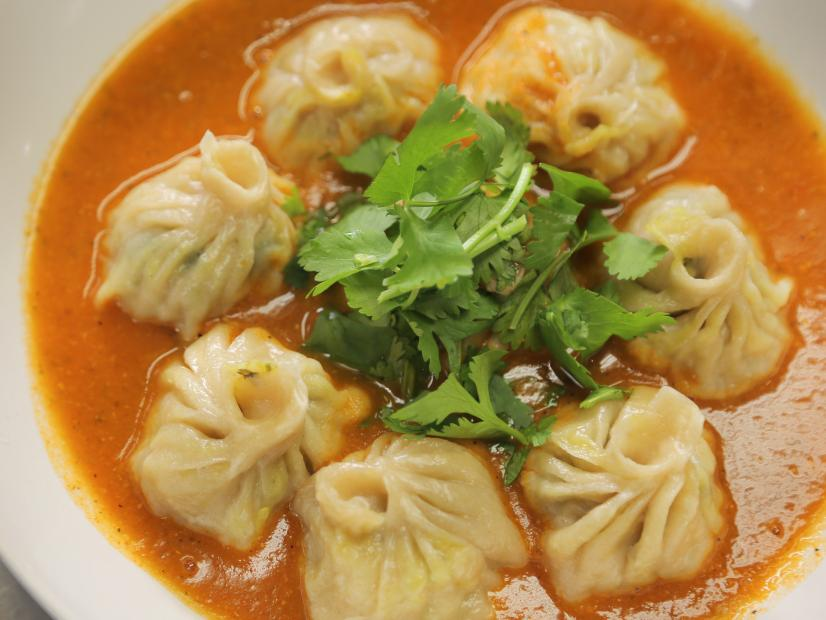

Home
Momo

Description
Momo is a type of steamed dumpling with some form of filling, most commonly beef and it is originally from Tibet. Momo has become a delicacy in Nepal and Tibetan communities in Bhutan, as well as people of the Indian regions of Darjeeling, Ladakh, Sikkim, Assam, Uttarakhand, Himachal Pradesh and Arunachal Pradesh.
| Basic Info |
|---|
Prep: 1 hr
Cook: 10 - 15 mins
Total: 1 hr 15 mins
Servings: 4 - 5
Yield: 40 - 45 mins
|
Ingredients
- 4 cups all-purpose flour
- 2 1/2 pounds ground chicken thighs
- 1 cup chopped fresh cilantro
- 1 cup chopped onions
- 4 tablespoons minced garlic
- 4 tablespoons minced peeled ginger
- 2 tablespoons ground cumin
- 1 teaspoon ground cinnamon
- Salt and black pepper
- Nonstick cooking spray
Directions
- Step 1
Mix together the flour and 1 1/2 cups room temperature water in a bowl. Knead the dough well until it is medium-firm and flexible. Cover and let rest for 1 hour.
-
Step 2
Meanwhile, mix together the chicken, cilantro, onions, garlic, ginger, cumin, cinnamon, 2 tablespoons salt and 1/2 teaspoon pepper in a bowl.
- Step 3
To make the wrappers: Break off 1/2 ounce of dough and forming it into a ball. Place the ball on a flat surface and roll it into a 4-inch round with a rolling pin. Repeat with the remaining dough.
-
Step 4
Spray a steamer pan with cooking spray.
-
Step 5
Place a tablespoon of the chicken filling in the middle of a wrapper. Holding the wrapper in your left hand. Use your right thumb and index finger to start pinching the edges of the wrapper together. Pinch and fold until the edges of the circle close up like a little satchel. Place the momo in the prepared steamer pan. Repeat with remaining wrappers and filling.
-
Step 6
Fill the steamer pot halfway with water and bring to a boil. Set the steamer pan with the momos on top of the pot and cover with a tight lid. Steam the momos until cooked, 8 to 9 minutes.
See also: